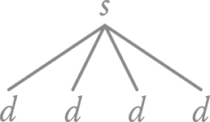
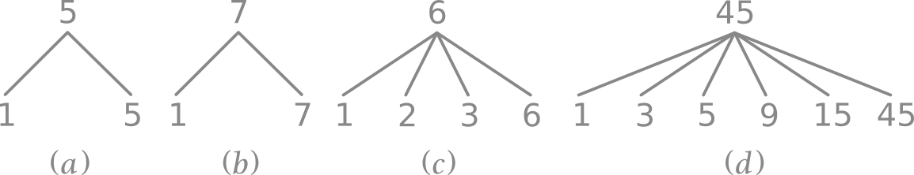
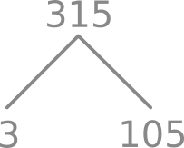
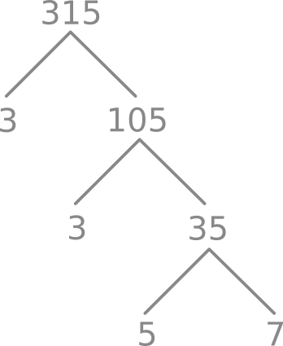

Pohon Faktor
Pohon faktor adalah cara untuk menggambarkan konsep tentang keterbagian, juga bilangan prima dan komposit. Tapi sebelum kita membahas tentang Pohon Faktor, kita terlebih dahulu membahas tentang "Pohon" dengan sesingkat-singkatnya.
Terminologi

Gambar di atas adalah ilustrasi tentang bentuk pohon yang sederhana. Kita bisa lihat ada \(s\) dan juga \(d\). Simbol \(s\) adalah superior. Dan simbol \(d\) adalah daun. Saya rasa ini penjelasan yang singkat dan cukup untuk membahas topik ini.
Pohon Faktor (yang kurang elegan)
Pertama-tama, saya akan memberikan anda contoh pohon faktor (yang kurang elegan). Berikut adalah contohnya.

Dari ilustrasi (a), (b), (c) dan (d), kita bisa melihat bahwa setiap angka yang ada di daun bisa membagi habis angka yang ada di superior.
Pada contoh (a) dan (b), kita bisa langsung mengetahui bahwa 5 dan 7 adalah bilangan prima, karena ia hanya bisa dibagi habis oleh 1 dan dirinya sendiri. Dan itu dituliskan pula di daun mereka.
Sedangkan (c) dan (d) adalah bilangan komposit, karena ia bisa habis dibagi dengan angka selain 1 dan dirinya sendiri.
Jadi, dengan pohon faktor (yang kurang elegan) ini, kita bisa melihat bahwa bilangan prima hanya memiliki dua daun. Sedangkan bilangan komposit memiliki lebih dari dua daun.
Pohon Faktor (yang hampir elegan)
"Apa benar seperti itu cara membuat pohon faktor? Rasa-rasanya tidak seperti itu."
Tepat. Jika itu yang terbersit di benak anda setelah membaca penjelasan di atas, maka anda tidak salah ingat. Pohon faktor yang umumnya kita lihat sama sekali tidak menyertakan angka 1 dan dirinya sendiri pada daunnya. Ya, jadi sebenarnya angka yang ada di superior tidak perlu disertakan juga di daunnya. Sehingga,

"Nah, bagaimana dengan contoh (a) dan (b)?"
Karena angka 1 dan angka yang ada di superior tidak perlu dituliskan di bagian daunnya, maka tidak perlu dibuat daunnya. Atau dengan kata lain, kita tidak perlu untuk menggambarkan daun jika angka tersebut adalah prima.
Namun, cara menggambarkan pohon faktor dengan cara seperti ini juga masih kurang tepat. Saya yakin anda juga pasti menyadarinya. :D
Dari contoh (c) dan (d), kita jadi tahu bahwa semakin besar bilangan komposit, maka semakin banyak juga angka yang bisa membagi habis angka komposit tersebut. Sehingga, semakin besar angka kompositnya, semakin banyak pula daunnya, dan pohon faktornya akan terlihat seperti ini.

Hal ini benar-benar tidak praktis untuk digambarkan. Sehingga kita memerlukan cara lain untuk menggambarkannya.
Dan saya ingatkan lagi, di tahap ini sudah clear bahwa kita tidak perlu membuat pohon atau memberikan daun pada bilangan prima. Sehingga, kita hanya perlu membuat pohon faktor atau memberikan daun apabila angka tersebut adalah angka komposit.
Pohon Faktor (yang umumnya kita lihat)
Agar-mata-kita-tidak-begitu-tersakiti™, kita memiliki cara lain untuk membuat pohon faktor. Sebagai contoh, kita akan membuat pohon faktor dari 315.
Mula-mula, kita cari bilangan terkecil (yang tentunya lebih besar dari 1) yang bisa membagi habis 315. 315 tidak bisa terbagi habis dengan 2. Maka kita coba dengan 3.
3 bisa membagi habis 315. Dan hasilnya adalah 105. Sehingga beginilah pohon faktor awal yang kita buat.

Kita tidak bisa membagi 105 dengan 2. Maka kita coba membaginya dengan 3.
Dan ternyata 3 bisa membagi habis 105, dan hasilnya adalah 35. Maka pohon faktor kita sekarang menjadi seperti ini.

35 tidak bisa terbagi habis dengan 2, 3 dan 4. Namun ia terbagi habis dengan 5, dan hasilnya adalah 7. Sehingga pohon faktor kita sekarang menjadi seperti berikut.

Dan kita ketahui bahwa 7 adalah bilangan prima, yang artinya kita tidak lagi perlu memberikannya daun. Pohon faktor kita selesai.
Sebenarnya dengan mengerti pohon faktor ini, anda secara tidak langsung telah memahami konsep tentang "Faktorisasi Prima" dan "Perkalian Prima" yang akan dibahas pada bagian berikutnya. Namun saya sampaikan lebih awal agar pembaca tidak kaget atau bingung di saat "pohon-pohon" ini nantinya muncul di saat saya menjelaskan konsep tentang "Faktor Persekutuan Terbesar (FPB)" dan "Kelipatan Persekutuan Terkecil (KPK)". Sehingga saya tidak perlu menjelaskannya lagi apabila sudah masuk ke pembahasan FPB dan KPK.